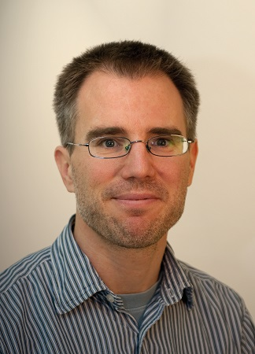

|
 |
Dr. Joerg WidmerResearch Professor and Research Director IMDEA Networks Institute Avenida del Mar Mediterraneo, 22 28918 Leganes (Madrid) Spain Phone: +34 91 481 6994 Fax: +34 91 481 6965 Email: |
Joerg Widmer is Research Director as well as Research Professor at IMDEA Networks in Madrid, Spain. His research focuses on wireless networks, ranging from extremely high frequency millimeter-wave communication and MAC layer design to mobile network architectures. From 2005 to 2010, he was manager of the Ubiquitous Networking Research Group at DOCOMO Euro-Labs in Munich, Germany, leading several projects in the area of mobile and cellular networks. Before, he worked as post-doctoral researcher at EPFL, Switzerland on ultra-wide band communication and network coding. He was a visiting researcher at the International Computer Science Institute in Berkeley, USA, University College London, UK, and TU Darmstadt, Germany. Joerg Widmer authored more than 200 conference and journal papers and three IETF RFCs, and holds 13 patents. He serves on the editorial board of IEEE Transactions on Mobile Computing, Elsevier Computer Networks and the program committees of several major conferences. He was awarded an ERC consolidator grant, the Friedrich Wilhelm Bessel Research Award of the Alexander von Humboldt Foundation, a Mercator Fellowship of the German Research Foundation, a Spanish Ramon y Cajal grant, as well as nine best paper awards. He is Fellow of the IEEE and Distinguished Member of the ACM.
General Chair ACM Mobicom 2023
TPC Co-Chair IEEE Infocom 2022
Associate Editor IEEE Transactions on Transactions on Mobile Computing (2017-)
Editor Elsevier Computer Networks (2017-)
Guest Editor IEEE JSAC Special Issue on "Millimeter-wave Networking"
Associate Editor IEEE Transactions on Communications (2010-2017)
Recent TPC memberships: